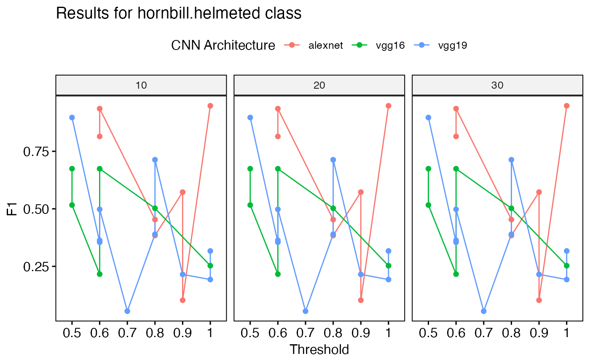
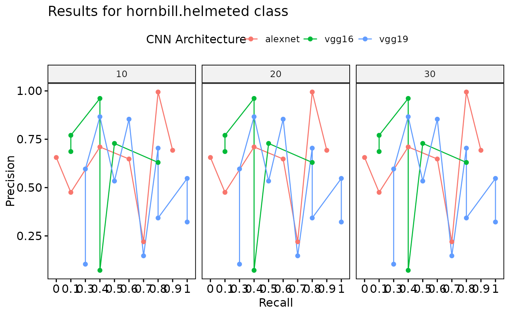

Extract Best Performance Results from Performance Tables
get_best_performance.RdGiven the path to a directory of performance tables, this function reads in the tables, combines them, and extracts the best performance results based on various criteria.
Usage
get_best_performance(
performancetables.dir,
model.type = "multi",
class = "hornbill.helmeted",
Thresh.val = 0.5
)Value
A list containing best F1 scores, best precision results, best recall results, and plots visualizing these metrics.
Examples
{
# Simulate data for performance tables
set.seed(123)
#' Set directory
performance_tables_dir <- paste(tempdir(),"/example_performance_tables/", sep='')
#' Create directory for performance tables (NOTE THIS IS FOR TESTING ONLY)
dir.create(performance_tables_dir, showWarnings = FALSE, recursive = TRUE)
#' Define list of model architectures
architectures <- c("alexnet", "vgg16", "vgg19")
#' Define list of training datasets
training_datasets <- c("Dataset1", "Dataset2", "Dataset3")
#' Create performance tables
for (arch in architectures) {
for (td in training_datasets) {
#' Generate random performance metrics
metrics <- data.frame(
Class = rep(c("hornbill.helmeted", "other.class"), each = 5),
"Training Data" = rep(td, 10),
"CNN Architecture" = rep(arch, 10),
Threshold = runif(10, 0, 1),
F1 = runif(10, 0, 1),
Precision = runif(10, 0, 1),
Recall = runif(10, 0, 1),
AUC = runif(10, 0, 1),
`N epochs` = rep(c(10, 20, 30), each = 10)
)
# Reassign column names
colnames(metrics) <- c("Class",
"Training Data", "CNN Architecture",
"Threshold", "F1", "Precision",
"Recall", "AUC", "N epochs")
#' Write data to CSV file
filename <- paste0(performance_tables_dir, arch, "_", td, ".csv")
write.csv(metrics, filename, row.names = FALSE)
}
}
#' Call the function with default parameters
results <- get_best_performance(performancetables.dir = performance_tables_dir, )
# NOTE: Results will not make sense as it is random
#' Print the best F1 scores
print("Best F1 scores:")
print(results$best_f1)
#' Print the best precision results
print("Best precision results:")
print(results$best_precision)
#' Print the best recall results
print("Best recall results:")
print(results$best_recall)
#' Print the best AUC results
print("Best AUC results:")
print(results$best_auc)
#' Plot F1 scores
print(results$f1_plot)
#' Plot precision-recall curve
print(results$pr_plot)
}
#> [1] "Evaluating performance for hornbill.helmeted Here are the present classes: hornbill.helmeted"
#> [2] "Evaluating performance for hornbill.helmeted Here are the present classes: other.class"
#> [1] "Best F1 results"
#> [1] "hornbill.helmeted" "hornbill.helmeted" "hornbill.helmeted"
#> [4] "hornbill.helmeted" "hornbill.helmeted" "hornbill.helmeted"
#> [7] "hornbill.helmeted" "hornbill.helmeted" "hornbill.helmeted"
#> Class Training Data CNN Architecture Threshold F1
#> 1 hornbill.helmeted Dataset1 vgg19 0.7790659 0.7132790
#> 2 hornbill.helmeted Dataset1 vgg19 0.7790659 0.7132790
#> 3 hornbill.helmeted Dataset1 vgg19 0.7790659 0.7132790
#> 4 hornbill.helmeted Dataset2 vgg19 0.5150718 0.8967387
#> 5 hornbill.helmeted Dataset2 vgg19 0.5150718 0.8967387
#> 6 hornbill.helmeted Dataset2 vgg19 0.5150718 0.8967387
#> 7 hornbill.helmeted Dataset3 alexnet 0.9544738 0.9477269
#> 8 hornbill.helmeted Dataset3 alexnet 0.9544738 0.9477269
#> 9 hornbill.helmeted Dataset3 alexnet 0.9544738 0.9477269
#> Precision Recall AUC N epochs
#> 1 0.1470483 0.7377974 0.5260297 10
#> 2 0.1470483 0.7377974 0.5260297 20
#> 3 0.1470483 0.7377974 0.5260297 30
#> 4 0.8664833 0.3727094 0.7259830 10
#> 5 0.8664833 0.3727094 0.7259830 20
#> 6 0.8664833 0.3727094 0.7259830 30
#> 7 0.2197676 0.7370777 0.1838495 10
#> 8 0.2197676 0.7370777 0.1838495 20
#> 9 0.2197676 0.7370777 0.1838495 30
#> [1] "Best Precision results"
#> Class Training Data CNN Architecture Threshold F1
#> 1 hornbill.helmeted Dataset1 alexnet 0.8830174 0.5726334
#> 2 hornbill.helmeted Dataset2 vgg16 0.9623589 0.2529649
#> 3 hornbill.helmeted Dataset3 vgg16 0.5310704 0.5164449
#> Precision Recall AUC N epochs
#> 1 0.9942698 0.79546742 0.3688455 10
#> 2 0.9611048 0.42842151 0.6623176 10
#> 3 0.7703341 0.05795856 0.7542474 10
#> [1] "Best Recall results"
#> Class Training Data CNN Architecture Threshold F1
#> 1 hornbill.helmeted Dataset1 alexnet 0.7883051 0.4533342
#> 2 hornbill.helmeted Dataset2 vgg19 0.9674695 0.1928159
#> 3 hornbill.helmeted Dataset3 vgg19 0.5763018 0.4979489
#> Precision Recall AUC N epochs
#> 1 0.6928034 0.9022990 0.4145463 10
#> 2 0.3428088 0.7608236 0.2963022 10
#> 3 0.3219374 0.9966172 0.1655209 10
#> [1] "Best AUC results"
#> Class Training Data CNN Architecture Threshold F1
#> 1 hornbill.helmeted Dataset1 vgg19 0.7790659 0.7132790
#> 2 hornbill.helmeted Dataset2 vgg19 0.5150718 0.8967387
#> 3 hornbill.helmeted Dataset3 vgg16 0.5310704 0.5164449
#> Precision Recall AUC N epochs
#> 1 0.1470483 0.73779740 0.5260297 10
#> 2 0.8664833 0.37270939 0.7259830 10
#> 3 0.7703341 0.05795856 0.7542474 10
#> [1] "Best F1 scores:"
#> # A tibble: 9 × 9
#> Class `Training Data` `CNN Architecture` Threshold F1 Precision Recall
#> <chr> <chr> <chr> <dbl> <dbl> <dbl> <dbl>
#> 1 hornbill.… Dataset1 vgg19 0.779 0.713 0.147 0.738
#> 2 hornbill.… Dataset1 vgg19 0.779 0.713 0.147 0.738
#> 3 hornbill.… Dataset1 vgg19 0.779 0.713 0.147 0.738
#> 4 hornbill.… Dataset2 vgg19 0.515 0.897 0.866 0.373
#> 5 hornbill.… Dataset2 vgg19 0.515 0.897 0.866 0.373
#> 6 hornbill.… Dataset2 vgg19 0.515 0.897 0.866 0.373
#> 7 hornbill.… Dataset3 alexnet 0.954 0.948 0.220 0.737
#> 8 hornbill.… Dataset3 alexnet 0.954 0.948 0.220 0.737
#> 9 hornbill.… Dataset3 alexnet 0.954 0.948 0.220 0.737
#> # ℹ 2 more variables: AUC <dbl>, `N epochs` <dbl>
#> [1] "Best precision results:"
#> # A tibble: 3 × 9
#> Class `Training Data` `CNN Architecture` Threshold F1 Precision Recall
#> <chr> <chr> <chr> <dbl> <dbl> <dbl> <dbl>
#> 1 hornbill.… Dataset1 alexnet 0.883 0.573 0.994 0.795
#> 2 hornbill.… Dataset2 vgg16 0.962 0.253 0.961 0.428
#> 3 hornbill.… Dataset3 vgg16 0.531 0.516 0.770 0.0580
#> # ℹ 2 more variables: AUC <dbl>, `N epochs` <dbl>
#> [1] "Best recall results:"
#> # A tibble: 3 × 9
#> Class `Training Data` `CNN Architecture` Threshold F1 Precision Recall
#> <chr> <chr> <chr> <dbl> <dbl> <dbl> <dbl>
#> 1 hornbill.… Dataset1 alexnet 0.788 0.453 0.693 0.902
#> 2 hornbill.… Dataset2 vgg19 0.967 0.193 0.343 0.761
#> 3 hornbill.… Dataset3 vgg19 0.576 0.498 0.322 0.997
#> # ℹ 2 more variables: AUC <dbl>, `N epochs` <dbl>
#> [1] "Best AUC results:"
#> # A tibble: 3 × 9
#> Class `Training Data` `CNN Architecture` Threshold F1 Precision Recall
#> <chr> <chr> <chr> <dbl> <dbl> <dbl> <dbl>
#> 1 hornbill.… Dataset1 vgg19 0.779 0.713 0.147 0.738
#> 2 hornbill.… Dataset2 vgg19 0.515 0.897 0.866 0.373
#> 3 hornbill.… Dataset3 vgg16 0.531 0.516 0.770 0.0580
#> # ℹ 2 more variables: AUC <dbl>, `N epochs` <dbl>

